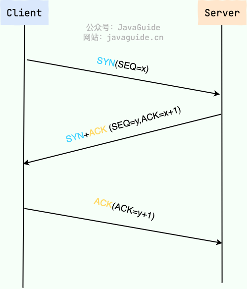
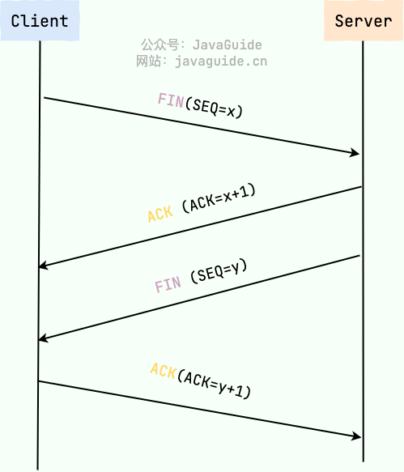

tcp 协议理解
TCP 与 UDP 的区别（重要）
- 是否面向连接：UDP 在传送数据之前不需要先建立连接。而 TCP 提供面向连接的服务，在传送数据之前必须先建立连接，数据传送结束后要释放连接。
- 是否是可靠传输：远地主机在收到 UDP 报文后，不需要给出任何确认，并且不保证数据不丢失，不保证是否顺序到达。TCP 提供可靠的传输服务，TCP 在传递数据之前，会有三次握手来建立连接，而且在数据传递时，有确认、窗口、重传、拥塞控制机制。通过 TCP 连接传输的数据，无差错、不丢失、不重复、并且按序到达。
- 是否有状态：这个和上面的“是否可靠传输”相对应。TCP 传输是有状态的，这个有状态说的是 TCP 会去记录自己发送消息的状态比如消息是否发送了、是否被接收了等等。为此 ，TCP 需要维持复杂的连接状态表。而 UDP 是无状态服务，简单来说就是不管发出去之后的事情了。
- 传输效率：由于使用 TCP 进行传输的时候多了连接、确认、重传等机制，所以 TCP 的传输效率要比 UDP 低很多。
- 传输形式：TCP 是面向字节流的，UDP 是面向报文的。
- 首部开销：TCP 首部开销（20 ～ 60 字节）比 UDP 首部开销（8 字节）要大。
- 是否提供广播或多播服务：TCP 只支持点对点通信，UDP 支持一对一、一对多、多对一、多对多；
什么时候选择 TCP，什么时候选 UDP?
-
UDP 一般用于即时通信，比如：语音、 视频、直播等等。这些场景对传输数据的准确性要求不是特别高，比如你看视频即使少个一两帧，实际给人的感觉区别也不大。
-
TCP 用于对传输准确性要求特别高的场景，比如文件传输、发送和接收邮件、远程登录等等。
-
TCP 如何保证传输的可靠性？
-
基于数据块传输：应用数据被分割成 TCP 认为最适合发送的数据块，再传输给网络层，数据块被称为报文段或段。
-
对失序数据包重新排序以及去重：TCP 为了保证不发生丢包，就给每个包一个序列号，有了序列号能够将接收到的数据根据序列号排序，并且去掉重复序列号的数据就可以实现数据包去重。
-
校验和: TCP 将保持它首部和数据的检验和。这是一个端到端的检验和，目的是检测数据在传输过程中的任何变化。如果收到段的检验和有差错，TCP 将丢弃这个报文段和不确认收到此报文段。
-
重传机制: 在数据包丢失或延迟的情况下，重新发送数据包，直到收到对方的确认应答（ACK）。TCP 重传机制主要有：基于计时器的重传（也就是超时重传）、快速重传（基于接收端的反馈信息来引发重传）、SACK（在快速重传的基础上，返回最近收到的报文段的序列号范围，这样客户端就知道，哪些数据包已经到达服务器了）、D-SACK（重复 SACK，在 SACK 的基础上，额外携带信息，告知发送方有哪些数据包自己重复接收了）。
-
流量控制: TCP 连接的每一方都有固定大小的缓冲空间，TCP 的接收端只允许发送端发送接收端缓冲区能接纳的数据。当接收方来不及处理发送方的数据，能提示发送方降低发送的速率，防止包丢失。TCP 使用的流量控制协议是可变大小的滑动窗口协议（TCP 利用滑动窗口实现流量控制）。
-
拥塞控制: 当网络拥塞时，减少数据的发送。TCP 在发送数据的时候，需要考虑两个因素：一是接收方的接收能力，二是网络的拥塞程度。接收方的接收能力由滑动窗口表示，表示接收方还有多少缓冲区可以用来接收数据。网络的拥塞程度由拥塞窗口表示，它是发送方根据网络状况自己维护的一个值，表示发送方认为可以在网络中传输的数据量。发送方发送数据的大小是滑动窗口和拥塞窗口的最小值，这样可以保证发送方既不会超过接收方的接收能力，也不会造成网络的过度拥塞。
三次握手和四次挥手具体说下


建立连接半连接状态是什么
在 TCP 三次握手过程中，Linux 内核会维护两个队列来管理连接请求：
- 半连接队列（也称 SYN Queue）：当服务端收到客户端的 SYN 请求时，此时双方还没有完全建立连接，它会把半连接状态的连接放在半连接队列。
- 全连接队列（也称 Accept Queue）：当服务端收到客户端对 ACK 响应时，意味着三次握手成功完成，服务端会将该连接从半连接队列移动到全连接队列。如果未收到客户端的 ACK 响应，会进行重传，重传的等待时间通常是指数增长的。如果重传次数超过系统规定的最大重传次数，系统将从半连接队列中删除该连接信息。
这两个队列的存在是为了处理并发连接请求，确保服务端能够有效地管理新的连接请求。
说下连接断开 time_wait 状态
什么是 TIME_WAIT 状态？
当 TCP 连接通过四次挥手断开时，主动关闭连接的一方（发送第一个 FIN 包的一方）在收到对方的最后一个 ACK 后，会进入 TIME_WAIT 状态。在此状态下，该连接不会立即关闭，而是保持一段时间（通常是 2 倍的最大报文生存时间，即 2MSL，Maximum Segment Lifetime）。
为什么需要 TIME_WAIT 状态？
- 确保最后的 ACK 能够到达被动关闭方
- 在四次挥手的最后一步，主动关闭方发送了一个 ACK 给被动关闭方。如果这个 ACK 在网络中丢失，被动关闭方会重发它的 FIN 包。
- 如果主动关闭方直接关闭连接而不进入 TIME_WAIT 状态，那么它将无法响应被动关闭方的重传请求，导致被动关闭方无法正常关闭连接。
- 进入 TIME_WAIT 状态可以确保主动关闭方有足够的时间来接收并处理可能的重传请求。
- 防止旧的数据包干扰新的连接
- TCP 使用序列号和确认号来保证数据的可靠传输。如果一个连接被关闭后，网络中仍然存在一些延迟的数据包（例如，由于网络拥塞或路由问题），这些数据包可能会被误认为是新连接的数据。
- 通过保持 TIME_WAIT 状态，旧连接的所有数据包在网络中都会超时并被丢弃，从而避免它们干扰新建立的连接。
- 等待网络中所有相关资源释放
- TIME_WAIT 状态还允许操作系统释放与该连接相关的资源，例如端口、缓存等。如果连接立即关闭，可能会导致资源未完全释放的问题。
说下 https 协议过程
HTTPS（HTTP Secure）是 HTTP 协议的安全版本，它通过 SSL（Secure Sockets Layer）或 TLS（Transport Layer Security）协议来加密客户端和服务器之间的通信，确保数据传输的安全性。下面是 HTTPS 协议的一个基本交互过程：
- 建立 TCP 连接
- SSL/TLS 握手过程：利用非加密对称传递加密对称的密钥
- 加密通信
- 关闭连接
说下 tls/ssl 四次握手
TLS/SSL 握手是 HTTPS 协议中用于建立安全通信的关键步骤。它通过加密和认证机制，确保数据传输的机密性、完整性和身份验证。以下是 TLS/SSL 四次握手的详细过程：
1. Client Hello（客户端问候）
客户端向服务器发送一条 “Client Hello” 消息，包含以下内容：
- 支持的协议版本：例如 TLS 1.2 或 TLS 1.3。
- 随机数 (Client Random)：一个由客户端生成的随机值，用于后续的密钥协商。
- 加密套件列表：客户端支持的加密算法组合（如 AES、RSA、SHA 等）。
- 会话 ID：如果客户端希望恢复之前的会话，会提供一个会话 ID。
2. Server Hello（服务器问候）
服务器收到客户端的 “Client Hello” 后，回应一条 “Server Hello” 消息，包含以下内容：
- 选定的协议版本：服务器从客户端支持的协议版本中选择一个双方都支持的最高版本。
- 随机数 (Server Random)：服务器生成的另一个随机值，用于后续的密钥协商。
- 加密套件：服务器从客户端提供的加密套件列表中选择一个最优的加密算法组合。
- 会话 ID：如果需要新会话或恢复旧会话，服务器会提供一个会话 ID。
此外，服务器还会发送以下附加信息：
- 数字证书：服务器将自己的公钥证书发送给客户端，证书通常由受信任的 CA（证书颁发机构）签发，用于验证服务器的身份。
- （可选）请求客户端证书：在双向认证的情况下，服务器可能会要求客户端提供自己的证书。
3. 客户端密钥交换与验证
客户端收到服务器的 “Server Hello” 后，执行以下操作：
a. 验证服务器的证书
客户端使用受信任的 CA 公钥验证服务器证书的有效性，包括：
- 证书是否由可信的 CA 签发。
- 证书是否过期。
- 证书中的域名是否与当前访问的域名匹配。
b. 生成预主密钥 (Pre-Master Secret)
客户端生成一个随机的预主密钥，并使用服务器的公钥（从证书中提取）对其进行加密，然后发送给服务器。这个预主密钥将用于生成最终的会话密钥。
c. （可选）发送客户端证书
如果服务器要求客户端认证，客户端会在此时发送自己的证书。
d. 发送 “Client Key Exchange” 消息
客户端将加密后的预主密钥发送给服务器。
e. 计算会话密钥
客户端根据之前交换的两个随机数（Client Random 和 Server Random）以及预主密钥，通过一个密钥派生函数（如 PRF），计算出会话密钥（对称密钥）。这个密钥将用于后续的加密通信。
4. 服务器密钥交换与完成握手
服务器收到客户端的 “Client Key Exchange” 消息后，执行以下操作：
a. 解密预主密钥
服务器使用自己的私钥解密客户端发送的预主密钥。
b. 计算会话密钥
服务器同样根据 Client Random、Server Random 和预主密钥，计算出与客户端相同的会话密钥。
c. 发送 “Server Finished” 消息
服务器发送一条加密的 “Finished” 消息给客户端，表明握手已完成。这条消息是对之前所有握手消息的摘要（通过 HMAC 计算），用于验证握手过程的完整性。
d. 客户端发送 “Client Finished” 消息
客户端收到服务器的 “Finished” 消息后，也会发送一条加密的 “Finished” 消息给服务器，确认握手过程成功完成。
5. 加密通信开始
握手完成后，客户端和服务器之间的所有通信都将使用协商好的对称加密算法和会话密钥进行加密和解密。此时，HTTPS 的安全信道已建立，可以开始传输应用层数据（如 HTTP 请求和响应）。
总结
TLS/SSL 四次握手的核心目标是：
- 协商加密算法：确定双方支持的最佳加密套件。
- 身份验证：通过证书验证服务器（甚至客户端）的身份。
- 密钥交换：通过非对称加密（如 RSA 或 ECDHE）安全地协商出对称加密的会话密钥。
- 完整性保护：通过消息摘要（HMAC）确保握手过程未被篡改。
在现代协议（如 TLS 1.3）中，握手过程得到了优化，减少了交互次数，从而提高了性能。
这个过程有几次加密
- 第一次加密：客户端使用服务器的公钥加密预主密钥（非对称加密）。
- 第二次解密：服务器使用自己的私钥解密预主密钥（非对称解密）。
- 第三次加密：客户端和服务器使用对称加密算法加密 “Finished” 消息。
- 第四次加密：后续通信数据使用对称加密算法进行加密。
linux 常用命令
在 Linux 操作系统中，掌握一些常用的命令可以极大地提高工作效率。以下是一些基础且重要的 Linux 命令及其简要说明：
-
文件和目录操作
ls：列出目录内容。-l以长格式显示文件详细信息。-a显示所有文件，包括隐藏文件。
cd：改变当前工作目录。pwd：显示当前工作目录路径。mkdir：创建新目录。rmdir：删除空目录。rm：删除文件或目录。-r递归删除目录及其内容。-f强制删除而不提示确认。
cp：复制文件或目录。mv：移动或重命名文件或目录。
-
文件查看与编辑
cat：显示文件内容。more或less：分页显示文件内容，less更加灵活。nano或vim：文本编辑器，用于编辑文件。head/tail：分别显示文件的开头或结尾部分，默认显示 10 行。-n可指定显示行数。
-
系统信息
df：报告文件系统的磁盘使用情况。du：估计文件空间使用情况。top或htop（需要安装）：实时显示系统的进程状态。ps：显示当前进程的状态。free：显示系统内存使用情况。
-
网络相关
ifconfig或ip：配置网络接口参数。ping：测试与其他主机的连接。netstat：显示网络连接、路由表等信息。ss：更现代的替代netstat，显示套接字统计信息。scp：安全地远程拷贝文件。ssh：通过加密通道远程登录到另一台计算机。
-
权限管理
chmod：更改文件或目录的访问权限。chown：更改文件或目录的所有者。chgrp：更改文件或目录的所属组。
-
压缩与解压
tar：打包或解包文件，常用于.tar,.tar.gz, 和.tar.bz2文件。gzip/gunzip：压缩或解压文件为.gz格式。bzip2/bunzip2：压缩或解压文件为.bz2格式。
-
搜索
find：查找文件和目录。grep：在文件中搜索匹配的行。whereis：定位命令的二进制文件、源代码文件和帮助文档的位置。which：显示给定命令的完整路径。
-
其他
man：显示命令的手册页。history：显示已执行命令的历史记录。echo：输出文本或变量的内容。sudo：以另一个用户的身份执行命令，通常是 root 用户。
服务器性能问题怎么定位
- 确定问题：首先明确性能问题的类型。比如是响应时间慢、吞吐量低还是资源耗尽（CPU、内存、磁盘或网络）；确认问题是否持续存在还是间歇性出现。
- 监控与收集数据：使用监控工具来实时跟踪服务器的性能指标，如 CPU 使用率、内存使用情况、磁盘 I/O、网络流量等。常用的工具有 Nagios、Zabbix、Prometheus 等；查看日志文件，包括应用程序日志、数据库日志以及系统日志，寻找错误信息或异常行为。
- 分析性能瓶颈：
- 如果是 CPU 瓶颈，可能需要检查是否有进程占用过多的 CPU 资源，可以使用 top 或 htop 命令查看。
- 内存问题可以通过 free、vmstat 等命令来检查是否存在内存泄漏或交换空间使用不当的情况。
- 对于磁盘 I/O 瓶颈，可以使用 iostat、iotop 等工具进行诊断。
- 网络性能问题则可以借助 ping、traceroute、netstat、iftop 等工具排查。
socket 网络编程了解吗
Socket 网络编程是实现不同计算机之间，或同一台计算机内不同进程之间的通信的一种编程方式。它为网络通信提供了一种简便的接口，使得开发者可以忽略底层网络协议的复杂性，专注于应用层逻辑的开发。Socket 起源于 Unix 系统，现在已经成为跨平台的标准编程接口。
Socket 类型：
- 流式 Socket（SOCK_STREAM）：提供一个有序、可靠、双向的连接导向的数据传输通道。使用 TCP 协议来保证数据的完整性和顺序。
- 数据报 Socket（SOCK_DGRAM）：支持一种无连接的服务，数据通过相互独立的报文进行传输，并且不保证顺序或者可靠性。通常使用 UDP 协议。
基本概念：
- IP 地址：用于标识网络上的设备。
- 端口号：用于区分同一设备上的不同服务或进程。
- 协议：规定了数据在网络上传输的规则，常见的有 TCP 和 UDP。
工作流程：
- 创建 Socket：通过调用 API 函数创建一个新的 socket 对象。
- 绑定地址：服务器程序需要绑定到特定的 IP 地址和端口上，以便客户端能够找到并连接到它。
- 监听连接请求：服务器设置好 socket 后，开始监听来自客户端的连接请求。
- 接受连接：一旦收到客户端的连接请求，服务器接受这个连接，从而建立起一条与客户端的通信线路。
- 发送/接收数据：双方可以通过建立好的 socket 发送和接收数据。
- 关闭连接：当通信结束时，双方都应关闭 socket 以释放资源。
编程示例：
服务器代码
1 | import socket |
客户端代码
1 | import socket |
在这个例子中，服务器等待客户端的连接，并在接收到连接后发送一条消息给客户端。客户端尝试连接到服务器，并打印从服务器接收到的消息。
hashmap 的理解
- 基本特性
- 键值对存储：HashMap 以键值对的形式存储数据，键是唯一的，而值可以重复。
- 无序性：HashMap 不保证元素的顺序，即插入的顺序与迭代的顺序可能不同。
- 允许 null 键和 null 值：HashMap 允许一个 null 键和多个 null 值。
- 非线程安全：HashMap 不是线程安全的。如果需要在多线程环境中使用，可以考虑 ConcurrentHashMap 或使用 Collections.synchronizedMap()方法包装。
- 时间复杂度：在理想情况下，HashMap 的查找、插入和删除操作的时间复杂度为 O(1)。
- 内部实现原理
HashMap 的底层实现是一个数组 + 链表/红黑树的组合：
- 数组：HashMap 内部维护了一个数组（称为桶数组），每个数组元素称为一个桶。
- 链表：当发生哈希冲突时，HashMap 会将冲突的键值对以链表的形式存储在同一个桶中。
- 红黑树：从 JDK 8 开始，当链表长度超过一定阈值（默认为 8）且桶数组的大小大于等于 64 时，链表会转换为红黑树，以提高性能。
-
哈希函数:
HashMap 通过键的 hashCode()方法计算哈希值，并通过(n - 1) & hash 的方式确定键值对存储的桶位置，其中 n 是桶数组的长度。 -
扩容机制:
- 当 HashMap 中的元素数量超过了负载因子（loadFactor）与桶数组长度的乘积时，HashMap 会进行扩容。
- 默认初始容量为 16，默认负载因子为 0.75。
- 扩容时，桶数组的长度会变为原来的两倍，并重新计算所有键值对的位置（rehashing）。
链表和红黑树区别
1. 数据结构类型
- 链表：是一种线性数据结构，它通过节点之间的指针连接来存储元素。每个节点包含两部分：数据域和指向下一个节点的指针（在双向链表中，还包含指向前一个节点的指针）。链表分为单向链表、双向链表和循环链表等。
- 红黑树：是一种自平衡的二叉查找树（BST, Binary Search Tree），它保证了基本操作如查找、插入和删除的最大时间复杂度为 O(log n)。红黑树通过给树中的节点添加颜色属性，并遵循特定的规则来保持树的平衡。
2. 时间复杂度
-
链表
- 查找：O(n)，因为需要从头开始遍历直到找到目标元素或到达列表末尾。
- 插入/删除：
- 在已知位置时，单向链表为 O(1)，但找到这个位置可能需要 O(n)的时间。
- 双向链表可以在知道前驱节点的情况下以 O(1)的时间完成删除操作。
-
红黑树
- 查找：O(log n)，由于其平衡性质确保了树的高度与节点数量成对数关系。
- 插入/删除：O(log n)，虽然这些操作可能会导致树不再平衡，需要进行旋转和重新着色来恢复平衡，但这些调整操作也是 O(log n)级别的。
3. 空间开销
- 链表：需要额外的空间用于存储指向下一个节点（对于双向链表还包括指向前一个节点）的指针。
- 红黑树：除了存储数据外，还需要为每个节点存储颜色信息，并且为了维持平衡，在执行插入和删除操作后可能需要进行旋转操作，这会带来一定的空间和时间成本。
4. 应用场景
- 链表：适用于频繁地在序列两端进行插入和删除操作的场景，比如实现栈或队列。
- 红黑树：适合于需要快速查找、同时也有较多插入和删除操作的场景，例如 Java 中的
TreeMap和TreeSet就是基于红黑树实现的，用来提供有序映射和集合功能。
5. 平衡与排序
- 链表：不自动维护任何顺序，除非手动排序。
- 红黑树：自动保持平衡并按照键值大小有序排列，支持高效的范围查询。
b+树怎么理解
- 基本概念
- 所有数据存储在叶子节点：内部节点只存储索引信息，不存储实际数据。
- 叶子节点之间通过指针连接：形成一个链表，便于范围查询和顺序访问。
- 更高的扇出（Fan-out）：由于内部节点只存储索引，B+树可以容纳更多的键值，从而减少了树的高度，提高了磁盘 I/O 效率。
- B+树的特点
- 高效的磁盘 I/O：
- 数据库和文件系统通常将数据存储在磁盘上，而磁盘 I/O 操作比内存访问慢得多。
- B+树通过减少树的高度（增加扇出）来降低磁盘访问次数，从而提高性能。
- 范围查询：
- 由于叶子节点之间通过指针连接，B+树非常适合范围查询。例如，查找键值在 [10, 20] 范围内的所有数据时，只需找到起始位置并沿着叶子节点链表遍历即可。
- 插入和删除：
- 插入和删除操作可能会导致节点分裂或合并，但 B+树通过自平衡机制确保树的高度保持较小。
- 单向性：
- 在 B+树中，只有叶子节点存储实际数据，因此所有的查找操作最终都会到达叶子节点。这与 B 树不同，B 树的内部节点也可能存储数据。
- B+树的应用
- 数据库索引：
- B+树是最常用的数据库索引结构之一，例如 MySQL 的 InnoDB 存储引擎使用 B+树作为主键索引。
- 它支持高效的等值查询和范围查询，同时利用叶子节点链表实现快速的顺序扫描。
- 文件系统
- 文件系统（如 NTFS、EXT4）使用 B+树管理磁盘块的分配和文件的元数据。
- 通过 B+树，文件系统能够快速定位文件数据所在的磁盘位置。
b+树和红黑树区别
1. 数据存储位置
- B+树：所有数据项都存储在叶子节点上，内部节点仅用于索引，包含指向子节点的指针以及用于分割范围的键。这种设计使得 B+树非常适合于需要大量数据存储并且要进行快速查找、插入、删除操作的场景，如数据库索引和文件系统。
- 红黑树：每个节点既可以是内部节点也可以是叶子节点，并且可以包含数据。这意味着红黑树的数据可能分布在整棵树中。
2. 查找效率与范围查询
- B+树：由于其叶子节点通过指针相连，形成一个链表，因此支持高效的范围查询和顺序访问。这对于需要频繁执行范围扫描的应用（例如数据库管理系统中的索引）非常有用。
- 红黑树：虽然也提供了对数时间复杂度 O(log n)的查找性能，但由于它不是专门为范围查询设计的，所以对于连续范围的数据检索不如 B+树高效。
3. 平衡机制
- B+树：通过分裂和合并节点来保持平衡，确保所有叶子节点都在同一深度，从而保证了查找效率的一致性。
- 红黑树：通过颜色标记（红色或黑色）和一系列规则（如根节点必须为黑色、没有两个连续的红色节点等）来维持树的高度接近 log(n)，从而实现近似平衡。
4. 应用场景
- B+树：通常用于需要处理大量数据并提供快速随机访问的场合，特别是当数据量大到无法完全加载进内存时，比如数据库索引、文件系统等。
- 红黑树：适用于内存中的动态集合或映射表的操作，例如 Java 中的
TreeMap和TreeSet就是基于红黑树实现的，适合那些需要有序遍历元素的情况。
简单总结
- 如果你的应用需要处理大量的磁盘 I/O 操作，并且经常需要做范围查询，那么 B+树可能是更好的选择。
- 如果你主要是在内存中操作较小规模的数据集，并且需要维护一个有序的数据结构来进行快速查找和遍历，那么红黑树会更加合适。
mysql 事务特点
1. 原子性（Atomicity）
- 含义：事务被视为一个不可分割的工作单位，事务中的操作要么全部成功执行，要么完全不执行。如果在执行过程中发生错误，整个事务将被回滚到事务开始前的状态，就像从未发生过一样。
- 实现机制：通过日志（redo log 和 undo log）来保证。redo log 用于记录已提交事务的操作以便在系统崩溃时恢复，而 undo log 则用于撤销未完成的事务。
2. 一致性（Consistency）
- 含义：事务应该把数据库从一种一致状态转换为另一种一致状态。这意味着在事务开始之前和结束之后，数据库的完整性约束没有被违反。
- 实现机制：这依赖于开发者的正确使用，即编写能够保持或恢复数据库一致性的事务逻辑。此外，MySQL 本身提供的约束（如外键、检查约束等）也有助于维护一致性。
3. 隔离性（Isolation）
- 含义：多个事务并发执行时，每个事务不应受到其他事务的影响，如同它们是串行执行的。隔离级别定义了事务之间的可见性程度，MySQL 支持四种隔离级别：
- 读未提交（Read Uncommitted）：最低级别的隔离，允许脏读。
- 读已提交（Read Committed）：阻止脏读，但可能出现不可重复读。
- 可重复读（Repeatable Read）：默认级别，解决了不可重复读的问题，但在某些情况下可能会出现幻读。
- 序列化（Serializable）：最高的隔离级别，通过强制事务串行执行避免所有并发问题。
- 实现机制：主要是通过锁机制和多版本并发控制（MVCC）来实现不同级别的隔离。
4. 持久性（Durability）
- 含义：一旦事务被提交，它所做的更改就应该是永久性的，即使系统发生故障也不会丢失。
- 实现机制：通过写入重做日志（redo log）并在适当的时候刷新到磁盘上来保证。即使数据库崩溃，也可以根据这些日志恢复已经提交的数据。
脏读、不可重复度、幻读
- 脏读： 一个事务能够读取另一个事务尚未提交的数据更新结果。
- 不可重复读：在一个事务内两次读取同一行数据可能得到不同的结果，因为在这两次读取之间另一个事务修改并提交了该行数据。
- 幻读：当一个事务正在访问某个范围内的记录，并且另一个事务在这个范围内插入了新的记录或删除了记录，导致第一个事务前后看到的不同集合的记录。
幻读怎么解决
间隙锁是哪个隔离级别用
mysql 索引理解
索引什么数据结构实现
索引优化技巧
慢查询怎么处理
简单说 redis 用过的数据结构和底层实现
list 怎么作为消息队列
redis 双写一致性问题，怎么解决的
解释缓存穿透
说下布隆过滤器
布隆过滤器的误判率怎么理解
If you like this blog or find it useful for you, you are welcome to comment on it. You are also welcome to share this blog, so that more people can participate in it. If the images used in the blog infringe your copyright, please contact the author to delete them. Thank you !